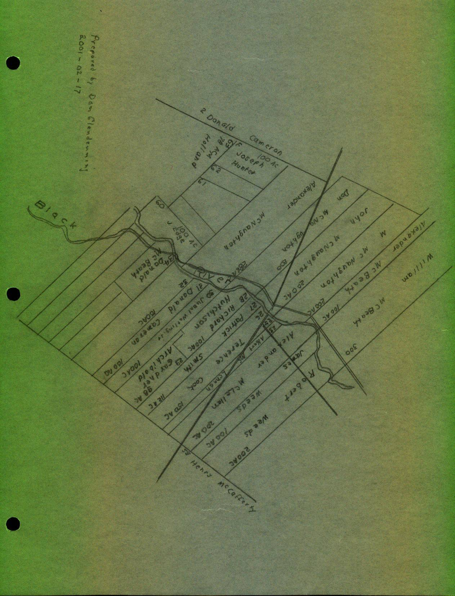
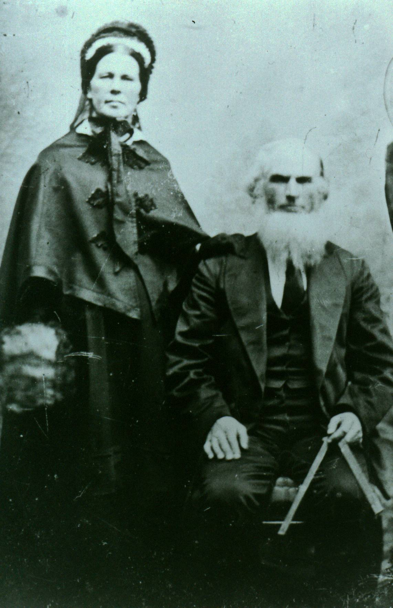
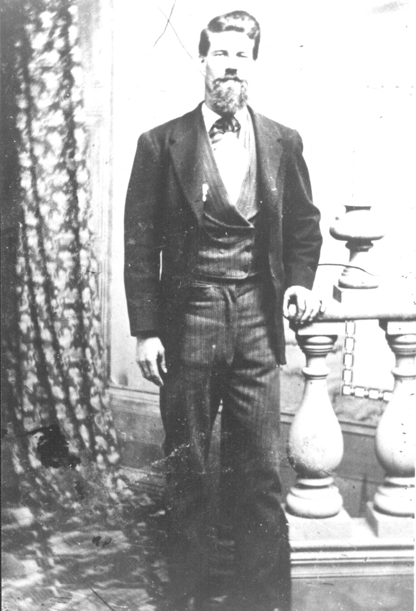
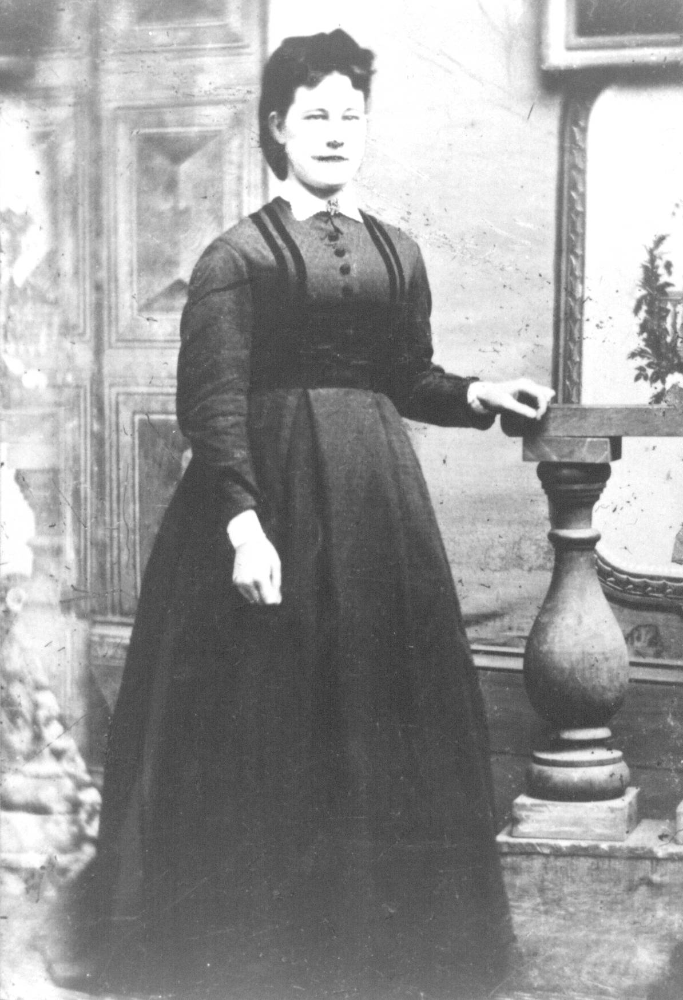
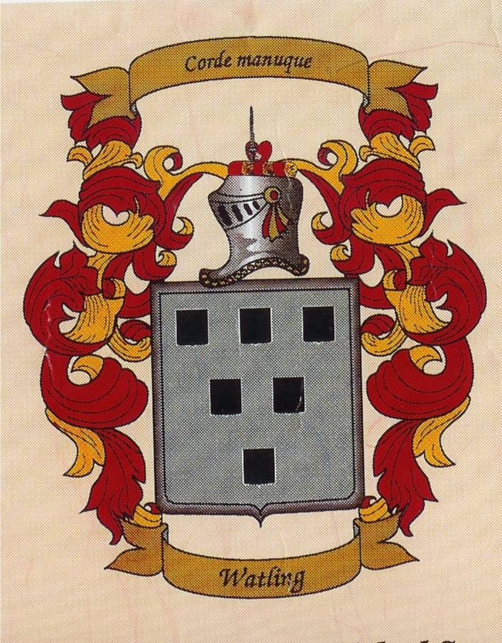
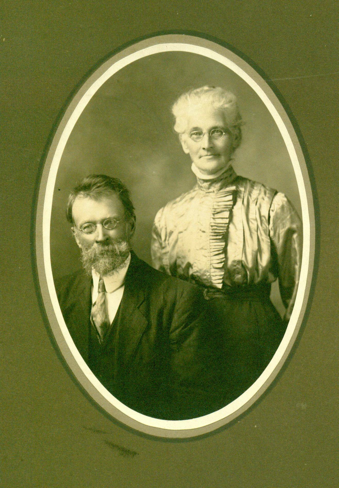
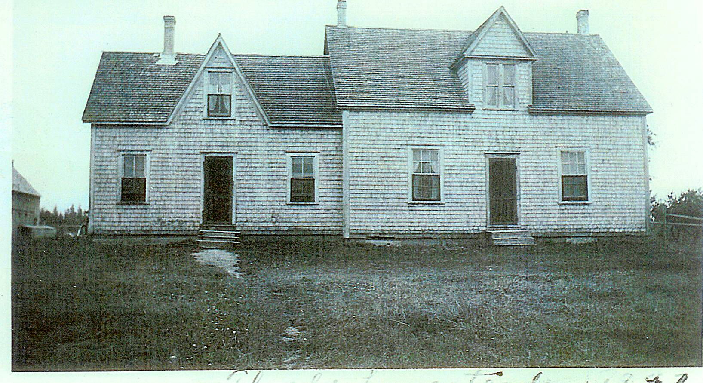

WATLING ROOTS
To the extent known, this section deals with actual ancestral families and their locations. The nature and extent of information for each family or location varies, reflecting the extent of my search rather that available information. In no way should this section be considered a complete family history.
While we usually carry the name of the male side of our ancestral family, in fact, each person is an equal descendant of many other families as well. In the writer’s case, he is directly descended on his maternal side from families named Watling, Leech, MacNaughton, MacDonald, McAskill and Jardine. These families reflect Highland and Lowland Scottish roots. Of my maternal Great Grandparents, all were Scots except two.
The Canadian roots of my maternal ancestors reside in the community where I was born, Black River, New Brunswick – a community some 10 miles south and east of Chatham.
BLACK RIVER CONNECTIONS
A. W. MacDougall says that the name Black River, in the MicMac language is Mat-quan-ti-gook - a term intended to describe its waters. MacDougall describes at least one lot, at McDougall's Point near the mouth of the river, which was granted to Delesderniere and Marsten prior to 1784. United Empire Loyalists came to Black River between 1785 and 1795. Following this, there arrived mostly people from Scotland, highlanders and lowlanders alike, including MacDonalds (McDonalds), MacNaughtons, McBeaths and MacLeans. Many came directly from Scotland while others are thought to have come to the Miramichi via Cape Breton, Prince Edward Island, or other Maritime ports.
The Black River flows from west to east and empties into Bay du Vin, which is part of the Miramichi River. By 1800, grants had been made to settlers along the shores from Hexham east. In 1812, there was a major push to settle the Black River including the Little Black River now known as the Little Branch. Settlements on the upper reaches of the Black River came a decade later and the Meadows closer to mid- century. Some specific settlement dates are found later in this chapter.
Miramichi Place Names
Information about early place names of the area was taken from Geographical Names of New Brunswick, 1875.
Chatham was once known as Spruce Tree after a large Spruce tree growing on Water Street. The name changed to Chatham about 1800 after William Pitt, the Earl of Chatham, Prime Minister of England.
Although Wells Brook, Weldfield and Redmondville are shown, the origin of the names is not given.
McKenzie Settlement was likely named after John and Roderick MacKenzie who were each granted 100 acres there in 1871 and 1873. John K. MacKenzie was granted lot #163 (100 acres) in 1907. In 1909 Mary Anderson was granted 300 acres of land at the Little Branch end of the McKenzie Road. The MacKenzie Road started officially at the Little Branch School.
Point aux Carr was once known as Cape Beduin; it is also known as Pointe au Quart.
Robert Logie came from Scotland around 1790 and the Black Brook Post Office was renamed Loggieville when Andrew Logie became Postmaster in 1895.
Miramichi was probably named by Cartier in 1535 from Montagnais Maissimeu Assi meaning Micmac Land.
Northumberland Straight appears to have been named by Admiral Colville around 1877 after his flagship, Northumberland, before that, it was known as Red Sea.
Northumberland County was established in 1785 and was probably named after Northumberland Strait.
Escuminac comes from Micmac Eskumunaak meaning "A lookout place."
Hardwicke Parish was established in 1851 and named after Benjamin Hardwick of London who contributed to a Church of England Mission at Bay du Vin. He also contributed a communion service to the church.
Glenelg Parish was established in 1814 and was named by Major McDonald who settled in the area around 1790.
Black River was settled in 1820 by settlers from Scotland. Before that it was known as Glenelg.
Napan is derived from the Micmac Manabalnamajik which means take fish off stick.
Hexham is also has Scottish roots.
Transportation
Transportation between settlements was mainly by boat hence the fact that initial settlements were along rivers and shores. The dates on which grants were made also reflect the fact that, in the case of Black River, settlement proceeded up the river from its mouth. Adjacent lands along at Hexham and in Miramichi (Bayside) were granted in the 1780's and 1790's; settlers began to spread up the Black River, at least along the south side, after the turn of the century. Initially blazed paths, and eventually roads were made between communities. Elsewhere, I quoted my Great Grandmother’s sister, Mary Anne Harley, about her walk from Pokemouche through the woods to Newcastle.
Helena (Smith) Kingston remembered her father, or was it her grandfather, traveling from Bayside to Loggieville by small boat to pick up supplies. Later, commercial boats brought supplies from Loggieville dropping them off at various locations along the coast often taking fish on the return trip.
According to the History of Bay du Vin, 25 pounds Sterling was appropriated in 1819 to develop a road from Black River to Bay du Vin. In 1824, John Bailey Williston was given a sum of money to build to a width of 20 feet half the road from Bay du Vin to Black River.
Even when I was a youngster, I remember someone pointing out the “bark road” which by then was only an overgrown road where it crossed our property but could be more clearly seen and perhaps even used where it crossed the McKnight Road. The Bark Road was used in winter to haul bark from the Black River area to be used in both Chatham and Newcastle during the shipbuilding era. It likely started somewhere between Black River and Bay du Vin, crossed woodland properties in the Branch and Black River, crossed the river, travelled along the A short cut towards Point Aux Carr then turned west, crossed the Napan road and eventually ended up at Chatham or Newcastle.
The first Tasks
On arrival, an immigrant would seek out a piece of land to make a home. The land was heavily forested and the first task would be to make a clearing and prepare lodging for the coming winter, Homes were made of logs cut on the property by hand; crevices between the logs were stuffed with moss to keep out the cold and snow. Logs not needed were used for firewood; burned the remaining as brush and the first seeds, wheat, oats, potatoes and garden vegetables were planted and harvested among the stumps - again by hand. A root cellar kept vegetables from freezing during the long winters.
Schools
Most of the early settlers in Black River spoke Gaelic. Based on the work of A. W. McDougall, the first instruction in Black River was provided in a barn belonging to Archibald Cameron, Sr. Following this, teachers provided instruction in their own homes. In 1825, residents petitioned for the erection of a school, which was erected across the road from the Richard Godfrey residence (Until a few years ago, the residence of John Godfrey); this would be just east of the lane leading to St. Stephen’s church. This building seems to have served all of Black River and as far east as Bay du Vin. About 1845, the district was divided with one school being build at Middle Black River and another at Bayside (now Miramichi). A few years later a school was erected at Little Branch; shortly thereafter, the school burned but was soon replaced. I have no information on dates for the first school in Upper Black River but believe that the first school was east of Route 11.
About 1937, the Rev. Douglas Smith, Rector at St. John’s Anglican Church in Bay du Vin provided tutoring in the Rectory to high school students in the area; numbers grew including students from Black River. Teachers were hired and classes were moved to the church hall. In January 1940, the Miramichi Rural High School opened at Miramichi (Bayside) with 67 students enrolled.
The History of Bay du Vin records a sawmill in Bay du Vin operated by Ortho Robichaud in 1789. The Bay du Vin history also reports the following taken from the Gleaner in 1833.
Mr. George Fowlie erected a gristmill on the Little Black River, which commenced grinding last week. We have seen some bread made of the flour manufactured at this mill and it was of superior quality. It has a never failing stream of water and will be a great accommodation to the inhabitants of Bay du Vin and adjoining settlements where such an establishment was much wanted.” The Fowlie mill was burned and rebuilt twice.
Churches
According to A. W. McDougall, most of the first settlers were Presbyterian and would have been served by an itinerant ministers and missionaries. The first church, thought to be Presbyterian but used by all Protestants in the area, was built in Bay du Vin in 1812. In 1818 the people of Bay du Vin, Burnt Church and Tabusintac petitioned for a minister to serve the three charges.
The people of Black River decided to build their own church and, on November 20, 1836, St. Stephens Presbyterian Church was officially opened. The first building, I believe was erected in what now serves as part of the cemetery. The church became dilapidated and, rather than undertake repairs, a new building, the present St. Stephens Church (at that time Presbyterian) was opened on December 30, 1906.
As a result of the creation of the United Church of Canada in 1925, members who wished to continue in the Presbyterian faith found themselves without a building. For a few years they met in member’s homes or in schools. In 1930, St. Paul’s Presbyterian Church was officially opened; St. Stephens continues to serve the community as St. Stephens United Church.
Post Offices
Canadian Archives has a database, searchable through the Internet, on post offices and postmasters. On checking the Little Branch Post Office, I found the following:
Little
Branch Post Offices
Postmaster
Dates Cause of vacancy Alexander
Cameron 1871-11-01 to1876-03-30 Resignation (Closed for 15
months)
John
MacNaughton 1876-08-01 to 1883-08-20 Resignation, closed
Alexander
Cameron 1884-11-01 to 1887-03-22 Resignation; closed for 6 months
George
Fowlie 1887-09-01 to 1899-10-02 Death
Mrs.
Marjorie Fowlie 1900-02-01 to 1903-09 Change in site
Jubal
Watling 1903-12-01 to 1910-12-02 Resignation
A.E.
MacDonald 1911-03-01 to 1914-08-10 Resignation
Elmer
Glendenning 1914-11-01 to 1916-08-01 Resignation
Donald
MacNaughton 1916-09-01 to 1928-10-31 Closed
There was Post Office named Watling, which opened in 1911 and closed in 1928. The Postmasters were Donald Watling, A. H. McKay and A. D. Watling. This post office was on the north side of Black River between Middle and Upper Black River.
Land Grants on the Little Black River
The lower portion of the Black River, including the Little Branch, was granted in 1912. Since this is part of a family history, rather than a general history, I include only those grants of immediate interest or reasonably adjacent to ancestors. Based on my review of the Crown Land Grants Index and maps, the original grants along the south side of the Little Black River were as follows:
1 Enoch
Godfrey 140 June 3,1812 F 623 2
Alexander McDonald Sr. 225 June 3,1812 F 623 3.
Kenneth Sinclair 220 June 3,1812 F 623 4&5
Angus Sinclair 410 June 3,1812 F 623 6
Alexander McDonald 140 June 3,1812 F 623 On
the north side of the Little Black River starting at the mouth, we
find: 1 John,
Catherine and Jean, children of Hugh MacLean 470 Acres 2 Farquhar
McRaw 240
3 Kenneth
MacDonald 440
4 Duncan
MacNaughton 200
Moving
west from the Alexander McDonald property, we find: 1,2
& 3 John McLean 370
4
Alexander Gunn 230
5
Robert MacBeath 165
6 John
MacLeod 195
7A Thomas
Patterson 100 Dec. 31, 1908 7B Elmer
Glendenning 100 Sept. 9, 1936
Selected Land Grants on the Little Black River
LOT NAME ACRES DATE VOL NO
The Meadows:
26 Terrence Cook 50. July 24, 1833
27 Patrick Smith 112 Dec. 21, 1838
28 Richard Hutchison 100 June 4, 1849
29 Gardiner Archibald 98 May 10, 1880
30 Jubal Watling, Jr 100 April 20, 1881
31 Donald Cameron 100 Jan. 30, 1854
33 Unknown
34 Donald McBeath Mar. 9, 1883
Neighbours on the north side of the river included:
J.Edge May 9, 1842
Alexander MacNaughton 286 June 3, 1828
John MacNaughton 200 July 24, 1822
Notes: 1 Source: Crown Land Grant Index, Minister of Natural Resources and Energy, New Brunswick, 1988
Spellings as found in the source document
Original land grants neighbouring my ancestors
Grantees may have been granted additional land in area
But the essence of a community is its people, the remaining paragraphs, therefore, provide a few notes on each of the following families known to be a direct ancestor:

The Gaelic spelling of MacDonald, meaning the son of Donald, is Mac Dhomhnuill. – but there were many donalds. The Macdonalds were a very large clan having taken many septs under their wing.
Alexander MacDonald was a native of the Parish of Assynt in Rosshire, Scotland. That area of northwest Scotland is hilly and rocky with many inlets and streams with little land suitable for cultivation; the county also includes many islands

My Great Great Grandfather, Alexander MacDonald married Grace MacAskill (I believe a relative of the giant Mac Askill of Cape Breton) and was said to have actually come to the Miramichi by way of Cape Breton. George Loggie said that Alexander MacDonald spent the first winter in Point Aux Carr after coming from Cape Breton
In fact, some suggest that they were married in Cape Breton. Their children include:
Kenneth (1805-1837)
Annabel (1806?- )
Hugh MacAskill (1808?-1873)
Anne (1813-1896) married William MacKnight (1804-1865)
Isabella (1810-1893) married Roderick Mackenzie (1808-1893)
Margaret (1815-1900) married William Godfrey (825-1904)
John (1817 - 1900) married Elspeth Jardine (1821-1907)
Mary (1821-1885) married Frederick Robertson
Jessie (1823-1912)
The original MacDonald home, I believe, was close to the river in the field just above where Norman Glendenning now lives. There was an old apple orchard there as well as a depression in the ground, which we always thought was the old cellar. Teddy Fowlie once said that his father, Bill Fowlie, remembered the old homestead in that location; other4s remembered a barn. Lillian (Glendenning) Weeks remembered a pile of lumber in that area that she thinks was the remnants of the old home. I remember a pump in the field on Uncle Jim’s property, not far from the orchard, and wonder if it may have been part of the original Macdonald homestead. In any case, the land sloped from there to the river making easy access by boat.
The following was taken from the book
by A. W. MacDougall. Alexander
MacDonald came from the Highlands with the 1803 immigration. He
settled on Lot #3 of the
Third Division, on the west side of the southwest branch of Black
River... It
has been told of the elder Mr. MacDonald, that when the Government
Surveyors were allotting the land to the prospective settlers, he
was told to proceed along the shore till he had secured a sufficient
frontage for his lot, the surveying party following him downstream
in a canoe. Land being plentiful, Mr. MacDonald decided to secure
as large a grant as possible. After he had gone a considerable
distance, his further progress was barred by a creek, but he plunged
in and waded across, only to be brought to a halt on the other side
by the government men, who considered that he had already acquired
sufficient. (Would this be Miller=s Brook?)
John and Elspeth (Jardine) MacDonald

Believed to be John MacDonald

Believed to be Elspeth Jardine MacDonald
I do not know the legal arrangements but Alexander MacDonald’s grant appears to have passed equally to his son, John D, and daughter, Jessie with John getting the eastern half and Jessie the western half; Neil Watling lives in the John Macdonald home and Norman Glendenning lives in the Jessie MacDonald home. John was a farmer; Jessie was a schoolteacher.
John MacDonald married Elspeth Jardine their children were:
James (Abt 1843-1923) Did not marry
Alexander (Abt 1845- )
Janet (Abt 1847- ) married Eliphet Allen
Grace (1848 –1934) married Jubal Watling (1846-1915)
Kenneth (1851-1927) married Catherine McGraw (1852-1931) Isabella (Abt 1854-1922) married James Finno (1856-1946)
Hugh (Abt 1856- )
Joseph (Abt 1858- )
Elspeth (Abt 1859- )
William (Abt 1865- )
St. Stephens Church records shows that Elspeth (Jardine) MacDonald, my Great Grandmother, died of debility on September 12, 1907 and is buried in St. Stephen’s Cemetery. Presumably, John MacDonald, her husband is buried there also but I have not been able to confirm this.
The Northumberland County Registrars Office has an entry (No. 226) which is an agreement between James J. McDonald, farmer of Little Branch and Jubal Watling, farmer, his wife Grace Watling and their sons Jubal George, John McDonald Watling, James Alexander William Watling and Donald Ernest Watling. The agreement was signed on November 13, 1901.
Under the agreement, James McDonald says that his mother is not well and he, James is not able to work the farm. James transfers all the land and buildings to Jubal and Grace Watling and their sons in return for a guarantee that the Watlings will provide James and his mother with a home, meat, drink, washing, clothing, bedding, fire, light, medicine, medical attendance, personal expenses and All necessaries as persons of their ages and conditions in life usually require and are accustomed to. And also A at their respective deaths shall give them and each of them decent Christian burial paying all funeral expenses...
Jessie MacDonald
At the Family Reunion in July, Cameron MacDonald provided me with a photocopy of some pages from the School Register kept by Jessie Macdonald, a Third Class Teacher, for District 11, Parish of Chatham. County of Northumberland for the period commencing April 2, 1860 and ending June 30, 1860: the photocopy is quite dim. Names recorded include McKnight, Gilliys(?), Jardine, Lockerbie, Murdoch, Dickson, Murphy, Carruthers, Joudry and Brymer.
There were 38 pupils registered in the month of June, 1860 with the youngest being John Jardine age 4 and the oldest being Robert Gilliys(?) Aged 17.
Cameron also provided a copy of the contract between Jessie Macdonald and the Trustees. Again, some I cannot read and the remainder is difficult to read.
We, the undersigned, do agree to pay to Jessie McDonald ... the several sums annexed to our names for the purpose of teaching a school in district No. 11, Parish of Chatham, County of Northumberland, for 6 months commencing ... , 1858 and the said Jessie McDonald agrees to teach a regular school for 6 months in said place according to rules given by Inspector for this County.
Napan
October 15, 1858
Jessie McDonald
Leech, Leitch come from the old English meaning “doctor”. The name Leitch is widespread in Scotland but also is mentioned specifically in Assynt which is where Alexander Macdonald came from. Other variations include Leche, Lech, Leyche and Leiche.
The McAskills are found in Sutherland County, Scotland. Like its neighbour, Rossshire, to the south, the area is hilly and rocky with many inlets and streams and little land suitable for cultivation. It is likely that Grace MacAskill came from that area but I do not have definite proof.
According to the “Jardines of Atlantic Canada”, is of French origin meaning “a dweller at or near a garden. A Jardine fought with William the Conqueror at the Battle of Hastings in 1066; it is assumed therefore that the Jardines came from Normandy with William. We do not know for certain if the Jardines in Scotland found their way north from England or if they came as part of another wave of conquerors from Normandy a few years later, however, the first written record of the name of Jardine in Scotland was in 1150.
The Jardines, as with the Glendennings, were Border people. That is, they lived in Dumfriesshire and within 30 to 40 miles of the Border, and even closer to the birthplace of my Great Grandfather, John Glendinning at Callister Hall not far from Lockerbie.
The earliest reference to Jardines in my family is Joseph Jardine, born in 1767 in Tundergarth, Dumfriesshire, Scotland in 1767. He married Janet Kerr, born in 1772 in Loveland, Scotland and they married on November 16, 1792. It is believed that some of the children were born in Scotland, however, Joseph was granted land in Napan on February 27, 1827. Joseph, my GGG Grandfather, died in Napan in 1849 and Janet in 1860. Their children include:
James
Jane
George
Thomas
John
Elizabeth
William
Janet
Samuel (presumably died young)
Samuel
James Jardine married Elspeth ??? Their children were:
Margaret
Elspeth, my GGrandmother who married John MacDonald
Joseph
Janet
George K.
James Kerr
The Jane Elizabeth Jardine, after whom my mother was named, was a first cousin of my Great-grandmother. Her father was John, a brother of Frank.
The following information about the MacNaughtons was provided by Donald Edge, whose mother was a MacNaughton and a direct descendant of the early MacNaughtons.
According to the 1851 census, Christina MacNaughton came to New Brunswick in 1812; she was joined by three brothers, Alexander, Donald and Malcolm in October, 1817 and Mary in November of the same year. In 1919, the family was joined by their mother, Catherine and two other brothers, Duncan and John.
They were granted land on the north side of the Black River A, Alexander being granted 296 acres and John Donald and Malcolm 200 acres each. Duncan had been killed by a falling tree in 1824 and was the second person buried in the Black River Cemetery
John MacNauchtan was born at Dunderave Castle, Scotland and died (before 1750) at Glenlyon, Perthshire, Scotland. His son, Malcolm was also born at Dunderave Castle and died at Glenlyon.
Malcolm’s son, John, was also born (July 24, 1774) at Dunderave Castle; he married Catherine Stewart and they had eight children. John died in Scotland.
Children of John MacNaughton and “Catherine Stewart:
Alexander (1789-1819) married Janet Jack (1782-1872)
Christina (1785-1865) married Robert Weeds (1788-1872)
Duncan (1787-1824) married Margaret MacPherson (
William ( (
Donald (1795-1820) married Margaret MacBeath ( -1857)
Mary (1799-1829) married John Cameron (1795-1879)
Malcolm (1797-1865) married Barbara MacBeath (1806-1875)
John (1801- ) married Marjorie Cameron (1807-1878)
Several of John’s children and his widow came to Black River.
Children of Alexander MacNaughton and Janet Jack:
Mary (Abt.1822- ) married William Watling (Abt. 1822- )
Catherine (1820-1855) married John Edge (1814-1896)
Janet ( married George Dick (
Christina (Abt.1823-1901) married Jubal Watling (1821-1900)
1 Origin of Name
The first record of the name was found in Sussex, England somewhere between London and Dover. It is likely that the name arises from Wartling which was a hamlet in the area but others believe that it was associated with Watling Road, the great Roman Road, which started near Dover, passed through Canterbury, turned north at London and went as far as St Albans It is thought, furthermore, that the Watlings were Vikings who landed in Northern Scotland in 870 AD, invaded northern France in 910 AD and then came to England with William the Conqueror in 1066. The name is found in the Domesday Book which was a census taken in England in 1086.
By the time of Richard 1 the Watling name had spread north to Watlingford in Oxfordshire, Watlington in Norfolk, Essex and Hertfordshire. Many Norman families moved north to Scotland in the 12th century and this might have included some Watlings.
Watling is thought to share the same roots as Whatling, Watlington, Watlingtone, Whatlington, Whatlingtone, Wadling, and Wadlingdon. Over time, the name spread into the northern parts of England and to Scotland as well.
Kinsmen of the family Watling who came to North America include Ffrances Watling who settled in Virginia in 1660, John Watling who landed in America in 1753, James Watling settled in Philadelphia in 1842 and Mary Watlington who settled in Antigua in 1679. Some Watlings moved to Canada after the American Revolution. Thomas Watling was banished to Australia for forgery in 1792; Francis Watling settled in Virginia in 1660, John Watling landed in America in 1753 and Mary Watlington settled in Antigua in 1759.
.
The Roger Watling Website includes the following comments about the origin of the Watlings:
“In the 5th/6th century a band of people crossed the North Sea from Europe to the British Isles, we do not know if it was one or more boats, but as a yachtsman sailing these waters I would suppose the latter, there being safety in numbers. They knew where they were going as trading was and had taken place long before, also they would have had oral stories from their forebearers who might have served in the Roman Legions, without a shred of evidence I like to think that they were Angles, or possibly Jute in origin rather than Saxon. The leader of this band was WACEAL, and those with him of the same clan, tribe or group were the Waceal – ingas. Ingas was not the son of as in the Scottish Watson, but meaning people of or followers of Waceal, so members of this group would be referred to as Wacelaingas. As time past the name began to change from, the vowels hardening, or softening, plus the input of people from other tongues and one form was Waselin. The earliest records I have are for Norfolk 1086, the DOOM’D DAY BOOK. In this book is recorded the Manor in the Half Hudred Diss, today scholars call it a lost Manor as its whereabouts are unknown. (I have my own theory, but that is another story) The Manor of Watlingeseta it states was held by the king (William in 1086, and before 1066 Edward the Confessor). Also recorded in the book is Wazalin who held land in Weeting, Norfolk, one of the few Anglo Saxons still holding land after William the Bastard and his bunch of land grabbing thugs won the Battle of Hastings. Watling Street was built by the Romans during their occupation and the name came after the Roman period, the present day town of St. Albans was originally Watlingcaster, but after the martyrdom of St. Alban the name changed, it can be supposed that the Wacealingas lived there.”
2 Watling Street
Watling Street was a major Roman Road built by the Romans after they invaded Britain in 55 BC. It started at Reculver, near Dover, passing through Canterbury (where a street sign bears the name) and on to London and points north. From London, Watling Road runs north and west passing through St. Albans (ancient Verulamium) a distance of about 200 km. An Internet source says that Watling Road ran from Dover to North Wales.
3 Coat of Arms
The blazon of Arms is translated graphically as shown above. The reader is reminded that coats of arms may vary slightly depending on the artist and modifications by later family members.
The Blazon of Arms for Watling is described as “
and the crest
“Out of a human heart a dexter hand grasping a sabre all proper”

5 Australia
I am reading a book, The Fatal Shore, by Robert Hughes, about the history of Australia. In it, he talks about Thomas Watling, from Dumfries, Scotland, transported for forging notes on the Bank of Scotland; Watling was a landscape painter who arrived in Australia in 1792. Watling is quoted a number of times on the barrenness of the country and the conditions in which people lived.
San Salvador Island is part of the Bahamas. On Sandy Point sits Watling Castle. The island was originally named Watling’s Island in honour of Captain George Watling a famous buccaneer and pirate. (It was renamed in 1926). He was also known as the “pious pirate” because he would not allow his crew to play cards or indulge in piracy on the Sabbath. The name Watling appears frequently in literature about the Bahamas. There may have also been a pirate named John Watling. I am sure that neither of these were part of our family. (http://www.bahamasnet.com/sansalvador.html)
Suffolk
County was described in 1812 as follows:
"Suffolk,
an English COUNTY
47 miles in length and 30 miles in breadth, bounded on the West by
Cambridgeshire, on the North by Norfolk, on the South by Essex and
on the East by the German Ocean. It contains 575 parishes, 28
market towns and sends 16 members to Parliament. The air is
generally wholesome, but the soil is various, on the sea coast it
is sandy and there are several small hills which yield hemp, pease
and rye. The inland parts are clayey and more full of trees. The
borders towards Essex are fit for pastures and the NW produces corn
of all sorts. There are manufactures of several kinds, particularly
all sorts of broad-cloth, stuffs and coarse linen. The principal
rivers are Little Ouse, the Waveney, the Stour, The Breton, the
Orwell or Gippe, the Ore and the Blyth. Ipswich and St.Edmundsberry
are the principal towns".
From
"The Complete and Universal Dictionary" by Rev James
Barclay – 1812
8 Prince Edward Island
Prince Edward Island Archives show a Jubal Watling living in Lot No. 52 at the time of the 1841 census. Lot 52 is at the Eastern end of PEI near but not including Montague and Cardigan.
According to the 1841 census, Jubal Watling was between 45 and 60 years of age, head of the family, his trade or occupation was that of a mason, he had 100 acres of land but one cannot tell if he rented or owned the land. The household consisted of Jubal as head, one female between the ages of 45 and 60 presumably his wife, and 4 males under the age of 16. Four members of the household were born in England and two were natives of the Island.
Other information in the PEI archives shows Jubal Watling married Louisa on 14 July 1831 and that they came from Norfolk County, England.
An examination of the two sets of data shows that:
One Jubal came from Norfolk and the other came from Suffolk.
The PEI Jubal has a different spouse; Susan Leach may have died and Jubal remarried.
The age brackets fit Jubal and Susan.
While my notes show only Jubal and Emily actually born in England, it is likely that the older children would have been born there also.
The first Jubal Watling, my Great-Great Grandfather, for which I have information, was Jubal Watling married Susan Leach. They married in Metfield, Suffolk County, England on November 14, 1814. Later they appear to have moved to Syleham, Suffolk County, England where their son, Jubal was baptized on August 17, 1823. I believe that Jubal and Susan stayed in England, although I do not know for sure. A note in Kenneth Watling’s database says that Jubal Jr. migrated to the USA - we do not know the year.
Jubal Watling married Susan Leach in Metfield, Suffolk County, England on November 14, 1814. In 1823, they were in Syleham, Suffolk County, England where their son, Jubal was baptized on August 17, 1823. I found no evidence of Jubal and Susan coming to Canada, although it is possible. A note in Kenneth Watling’s database says that Jubal migrated to the USA - we do not know the year. From my research, I believe that to be the Jubal who married Christina MacNaughton.
Family lore says that Jubal came to Black River via Cape Breton and maybe PEI; that is certainly possible. My search of PEI archives revealed a number of Watlings, including a Jubal, but the names, dates and marriage information did not match that of the Black River Watlings.
The following Watling siblings came to Black River:
Jubal who married Christina MacNaughton
William who married Mary MacNaughton,
Emma who married William Eddy,
Mary Ann who married William Maxwell, and
George who lived in the USA
The use of the name Jubal by three successive generations causes some confusion but I believe that the following information is accurate.
Janet Watling shows Jubal and Susan with two additional children – John and Susannah. Any further information? Dates?
Jubal, son of Jubal and Susan Leach, arrived in Black River and, about 1845, married Christina MacNaughton.
Children of Jubal and Christina (MacNaughton) Watling were:
Donald
Catherine (Kate)
Jubal, 1846-1915 married Grace MacDonald
Alexander (Sandy)
Susan
Malcolm
William
In 1851, Jubal Watling (F4243) petitioned for 50 acres of land situate as follows: on the South side of Black River adjoining south of William McBeath’s meadow lot and east of a lot applied for by John Edge. The petition is dated at Chatham on April 9, 1851 and includes his signature. The property was vacant, surveyed but without improvements. Other handwritten notes on the page are confusing in that they show apparent approval on May 21/1851 and Auction, August/51". They are signed by Peters, the Deputy Surveyor. No lot number is given but records show that a William MacBeath owned property in the area. I believe that this was the Jubal Watling married to Christina MacNaughton. This land was probably not in the Meadows.
10 Jubal and Grace (MacDonald) Watling

Jubal and Grace (MacDonald) Watling
On April 20, 1881, Lot No. 30, consisting of 100 acres in the Meadows was granted to Jubal Watling. This matches the location where Mum was born. It is likely that this is the Jubal Watling married to Grace MacDonald – my grandparents.
The New Brunswick Crown Lands Grant Index records of grant of 100 acres located at A30 BL. 15 SE SD Black River, Glenelg Parish Northumberland County to Jubal Watling, Jr. on April 20, 1884. (Recorded in vol. 105, No.18287)
Lot #30, granted to Jubal Watling, is located in an area known as the Meadows - a name that has long since disappeared. The Post Office, however, would have been Black River. The Meadows are found a mile or two west of Route 11 on the south side of the upper reaches of the Black River. There was, I believe, a road along the south side of the Black River, however, in my time, access was from a road along the north side of the river and across MacBeath’s Bridge. Buildings on the property have long since disappeared although Ken remembers visiting the property once and I think that I was there once picking blueberries. Apparently a mound for the old root cellar still could be seen. The old property has reverted to forest and the community has disappeared. The forests have now reclaimed whatever fields were cleared.
My Grandfather, Jubal Watling, lived at the Meadows; he married Grace MacDonald who lived at Little Branch – where Neil Watling now lives. Grandmother’s father, John, died in 1900, I think, and her mother, Elspeth, was not well. In addition, James, Grandmother’s brother had inherited the farm when his father died, was not married, was living at home but was not able to operate the farm. As best I can interpret, the land did not include the Jessie McDonald property where Norman Glendenning now lives.
On November 13, 1901, James entered into an agreement with his sister, Grace and her husband, Jubal. As parties to the agreement also were Jubal and Grace’s four sons, George, John, James and Ernest. A copy of this agreement can be found in the Northumberland County Registrar’s office.
All the land and buildings are to be turned over to the Watlings. In return, the Watlings will “keep support, maintain and provide the said James J. McDonald and his mother, Mrs. John D. McDonald, each of them and the survivor of them during the respective terms of their natural lives with good and sufficient house, room, meat, drink, washing, clothing, bedding, fire, light, medicine, medical attendance, personal expenses and all such necessaries as persons of their ages and conditions in life usually require and are accustomed to.” The Watlings were also to provide a “decent Christian burial” paying all funeral expenses.

Elspeth (Jardine) MacDonald died September 12, 1907 and James died April 1, 1923.
All of their children were born while they lived at the Meadows:
Christina, 1876-1956 married (1) Tom Adams and (2) John MacKenzie
Elspeth, 1878-1943 married John. W. MacNaughton
George, 1881-1958 married Emma Ronan
Janet, 1883-1977 married John R. Godfrey
John,1886-1953 married Edith Barron
James, 1888-1983 married Kathryn Mills
Jane, 1890-1964 married Elmer Glendenning
Ernest, 1892-1974 married Alice MacLean
Jubal was Post master at the Branch from December 1, 1903 50 December 3, 1910 Jubal Watling died in 1915 of a ruptured appendix. Following his death, his son, James A. Watling, returned to Little Branch from Portland to look after his mother, Grace Watling who died in 1934 of the summer complaint, which was a form of dysentery. The property, I believe, eventually passed to their sons, James and Ernest. James bought out Ernest’s share.